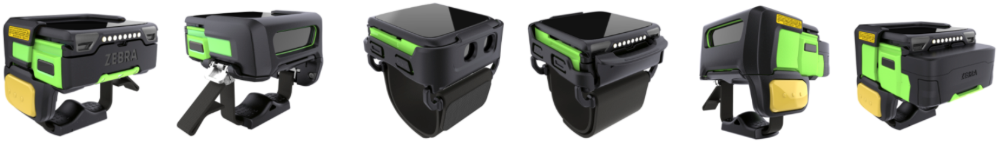
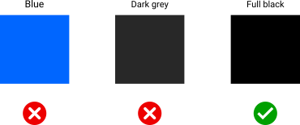
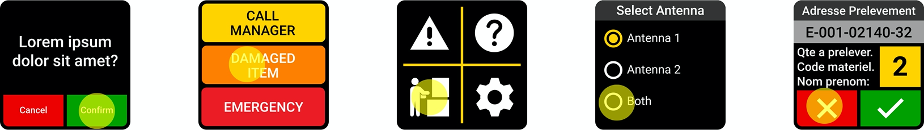

Overview
The Zebra WS50 is an ultra-compact, fully functional mobile computing device with built-in barcode scanner. It's designed to replace multi-device solutions that require a mobile computing device with a "ring scanner" or other external scanning peripheral. The WS50 can be worn on the wrist like a watch, on the back of the hand like a ring scanner or at the fingertips. Its modular design and available accessories allow the WS50 to adapt to numerous use cases and scanning environments.
 Click image to enlarge; ESC to exit.
Key industrial applications for the WS50 include warehousing, transportation and logistics, manufacturing, retail, hospitality and many others. Warehouse workers can use it for receiving, item sorting and put-away; Transportation and logistics workers can perform high-intensity scanning with visual, audible and haptic feedback, and on-screen prompts help ensure proper package placement for loading bay, conveyor, etc. Manufacturing workers can benefit from real-time updates on machine function status and low component stock. Productivity can be improved in all sectors through the WS50's peer-to-peer communications, task assignment and tracking, and many other applications.

App/Device Compatibility
While the WS50 is built around a full-scale application processor and Android version, its two-inch display and 1GB RAM require significant modifications to existing apps, UIs and workflows. In many cases, building an all-new app might be the most efficient route.
The Android 'Quick Settings' tiles (l) and Launcher.
Click image to enlarge; ESC to exit.
 The Android Settings panel (l) and BACK, HOME and POWER buttons.
The Android Settings panel (l) and BACK, HOME and POWER buttons.
Click image to enlarge; ESC to exit.
WS50 Device Variations
The resources available to developers in the WS50 differ from those of most other Zebra devices and wearable terminals. This guide addresses each of the variations and when possible, provides guidance and/or recommendations for additional development resources.
- Two-inch Screen Adaptations:
- Includes a small, scrollable soft input panel (SIP) for data entry
- Split screen functionality is disabled for all apps
- Capacitive navigation buttons are off-screen to maximize screen space for apps
- Memory limited to 1GB RAM, 8GB internal storage
- No GMS capability
Zebra recommends reading Google's screen compatibility overview and guidelines for adapting apps to support different screen sizes. These and other useful links can be found in the Also See section at the bottom of this guide.
See the WS50 Product Reference Guide (pdf) for additional device hardware, software and device usage details.
WS50 Specifications
 |
 |
||
|---|---|---|---|
| Specification | WS50 Alone | WS50 + Mount | WS50 Converged |
| Outer dimensions (LxWxD) | 2.44 x 2.32 x 0.71 in. (62 x 59 x 18mm) |
2.91 x 2.51 x 0.751 in. (74 x 64 x 19mm) |
2.52 x 2.44 x 1.10 in. (64 x 62 x 28mm) |
| Weight | 2.89 oz. (82g) | 3.77 oz. (107g) | 4.48oz. (127g) |
Hardware
- Display size: 2.0 inches (diagonal)
- Screen dimensions: 1.4 inches (35.88 mm) x 1.4 inches (35.88 mm)
- Max. resolution: 460 x 460 pixels
- Screen density: 326 dpi (actual=320 dpi)
- Display type: AMOLED capacitive touch panel
- Processor: Qualcomm SDW4100
- Memory: 1MB RAM, 8GB Flash storage
- Battery:
- Standard battery: 800 mAh Li-Ion PowerPrecision (wrist)
- High-capacity battery: 1300 mAh Li-Ion PowerPrecision (converged)
- **Supports fast charging, hot swap
- Battery life: Up to 10 hours continuous operation
- Modalities: Two-finger Trigger Mount, Back-of-Hand (BoH), Wrist
- Sensors: 3-axis accelerometer, gyroscope, ambient light, proximity (optional)
- Radios: Bluetooth 4.2 BLE, NFC, Wi-Fi 802.11 a/b/g/n/ac/d/h/i/r
- Scanner: SE4770 1D/2D barcode scanner with MDF and auto-triggering
- Camera: 13 megapixel
- Programmable physical buttons: 4
- Charging: USB-C Cable Cup, Cradle
- LEDs: 2, programmable via AIDL
- Durability:
- Up to 6-foot (1.8 m) drop to concrete (in mount)
- 1000 tumbles at 19.7 inches (0.5 m)
- Operating temperature -10˚C to 50˚C
- IP65 rating
- Data capture options: Camera, imager, SE4770 scanner
- Push-to-talk: embedded speaker, mic, Bluetooth headset (not included)
Software
- Operating System: Android 11 AOSP
- Custom soft-input panel. Learn more
- Mobility DNA includes an MX 11.3 feature subset
- AIDL APIs for LED control
- Compatible with Enterprise Mobility Management (EMM) systems
Custom SIP
To facilitate keyed input on its reduced screen size, the WS50 comes with a custom software keyboard that's presented whenever an input field gains focus. The alphanumeric keyboard is presented in a scrollable window.
 Standard QWERTY keyboard is scrollable across two screen widths.
Standard QWERTY keyboard is scrollable across two screen widths.
Click image to enlarge; ESC to exit.
Numeric and special character layouts.
Click image to enlarge; ESC to exit.
WS50 SIP Behavior
- Displayed whenever an data entry field is detected
- Fields support all Android resources for defining field input and cursor movement:
- Force Initial Caps
- FORCE ALL CAPS
- Final action: (↵ multi-line, |> move to next field, √ end)
- The numeric/symbol are invoked programmatically or by tapping the corresponding key (i.e. "?123")
Learn how to handle keyboard input from the Android development community.
RAM Usage
The RAM in the WS50 is limited to 1GB, which must be shared among the Linux kernel, Android app launcher, the Zebra software stack and other services, including a management agent for some organizations. This might leave apps with just a few hundred megabytes for operation. Developers must be mindful of this when designing their apps.
Memory Considerations
- Minimize the number of apps running at any one time
- Develop simple workflows and load only one or two tasks at a time
- Design single-task IUs that conform to UX/UI Considerations below
While the WS50 does NOT implement Android Wear OS, some of the principles of Wear OS might be helpful when developing apps for WS50 devices.
UX/UI Considerations
Zebra recommends using Google Material Design tools and its design goals and principles as a foundation for starting new apps. See the video above for a quick overview. Zebra also advises observing the guidelines below when building UI screens from scratch.
Color Usage
Due to the unique characteristics of the WS50 display, keep the following in mind when selecting colors for use on the device.

Avoid Blue
Blue is the most challenging color for the WS50 display to render, and its use impacts display longevity. If blue must be used, select warmer shades wherever possible.
Use 'Full Black'
The WS50 display turns off each individual pixel in any region of the UI that's instructed to display "full black" (as opposed to very dark colors). This helps to maximize device operation while on battery and provides higher contrast ratios for UI screens. If the app displays black text on a white background, consider using the inverse.
Simplify UIs
Workflows and tasks should be broken into a series of simple, one-screen steps. This is critical for maximizing worker efficiency and minimizing user frustration caused by misplaced screen taps.
Touch Zones
According to a study of human fingertips and the mechanics of tactile sense conducted by the MIT Touch Lab , the average human fingertip is about 0.31 to 0.40 inches (8–10 mm) in diameter. Developers should therefore keep in mind that any physical area smaller than 0.40 inches (10 mm) intended as a touch point has the potential to create tapping errors with adjacent touch zones.
 Average finger size on the actual display size.
Average finger size on the actual display size.
Click image to enlarge; ESC to exit.
Recommendations
Zebra recommends the following when designing WS50 app UIs:
- Minimum "hit zone" sizes for apps:
- Bare finger: 0.28 inches (7 mm)
- Gloved finger: 0.40 inches (10 mm)
- Minimum "touch zone" for two-inch display:
- 60 x 60 pixels (30 x 30 dp)*
- Border around each grid cell:
- 12 pixels (6 dp)
*For keyboard layouts, touch zones can be smaller. With a 2X scale ratio, dp values are half the pixel values.
What's a dp?
Modern UI tools use the term "density-dependent pixel" (dp) when referring to pixel-based screen spacing relative to a 160 dpi screen. This allows for the wide variety of screen densities available today. For example, 1dp (pronounced "one dip") is equal to one pixel on a 160-dpi screen and two pixels on a 320-dpi screen.
Examples
 Click image to enlarge; ESC to exit.
Click image to enlarge; ESC to exit.

Click image to enlarge; ESC to exit.
 Click image to enlarge; ESC to exit.
Click image to enlarge; ESC to exit.
 Click image to enlarge; ESC to exit.
Click image to enlarge; ESC to exit.
User Interactions
When planning an app's Artboard, the following specs and guidelines might be helpful.
- Native resolution of the WS50 is 460 x 460 pixels.
- Zebra recommends a resolution of
? x ? pixelswhen sketching apps. - For margins and spacing:
- Most measurements should align to an 8dp grid.
- For iconography, typography and other small components, use a 4dp grid.
- To avoid an "overcrowded" UI, set padding at 10–16dp.
- Font size:
- Body copy: 14pt
- Captions: 12pt
- No text should be smaller than 12pt
- Touch Zones such as buttons should in most cases be set to 60dp for most screen regions, and 80dp in areas close to screen edges. However, this recommendation is flexible since using the 80dp spec for a button bar across the bottom of the WS50 screen could contain only three buttons. Touch zones should be no less than 48dp.
- Produce paper prototypes to simulate an WS50 screen and visualize the app's UI design. The WS50 screen measures about 1.4 inches (35.88 mm) square, so be mindful about cramping more information and functions. Less is better for WS50.
- For Layouts it's usually better to implement a ConstraintLayout, which performs better and is more user friendly than relative layouts and scrollable view ports.
- "Tuck away" supplementary app info in a menu, "info" button or other access control to minimize impact on UI space.
AIDL APIs
The following code can be used to control the WS50's left and right multi-color LEDs beyond what's available in Android's Notification API. Use these APIs to specify which LED to control on the device, and to light an LED without showing an on-screen notification.
To control WS50 LEDs:
Bind the app to the LED service:
Intent intent = new Intent().setComponent(new ComponentName("com.zebra.led", "com.zebra.led.LedService")); context.bindService(intent, ledConnection, Context.BIND_AUTO_CREATE);Interface with, specify and control the desired LED:
package com.zebra.led; // Interface for apps to control device LEDs: interface ILed { const int LED_LEFT = 2; // WS50 left LED const int LED_RIGHT = 3; // WS50 right LED // Set LED to solid color: // // @param ledID - the LED to control, one of the LED_ constants // @param color - the color to set, in standard Android ARGB format. The opacity (A) is ignored. // Color.TRANSPARENT (0) - turns the LED off // @throws IllegalArgumentException - the LED is not available or given color is not supported void setLed(int ledId, int color); }
Android Studio Warning
When connecting the WS50 device to a development host computer, Android Studio sometimes displays a message similar to the image below:
Android Studio warning can be safely ignored or supressed.
To prevent display of the message above, add the following line to the app's manifest.xml file:
<uses-feature android:name="android.hardware.type.watch" required=”false” />
Power Management
The WS50's 1300 mAh Li-Ion PowerPrecision+ battery is rated to provide a full 10 hours of continuous operation. However, battery performance varies greatly depending on usage patterns and device settings, especially those of the display panel and backlight. To maximize operation of WS50 devices while on battery power, Zebra recommends the following power-management best practices:
To Prolong Battery Life:
- Set screen brightness to the minimum level for effective use
- Set a short screen timeout interval (10-15 seconds)
- Set the device to wake only when touching the scan trigger or display
Optimize all WS50 apps for Doze and App StandbyObserveDoze Restrictions- Ensure apps are managing activities during the Doze maintenance window
- Do not disable Doze mode through MX
- Do not "whitelist" an app for battery optimization (prevents Doze mode)
- Test apps to ensure proper operation when entering/exiting Doze mode
Also See
WS50 Product Reference Guide (pdf) | Hardware, software and device usage details
From the Android development community:
- Screen compatibility overview | Adapting apps to different screen sizes, pixel densities
- Declare restricted screen support | Limit an app's execution to specific screens, if desired
- About the Android Interface Definition Language (AIDL) | For controlling WS50's two multi-color LEDs
- Principles of Wear OS | Some UI and task-based development techniques apply to WS50